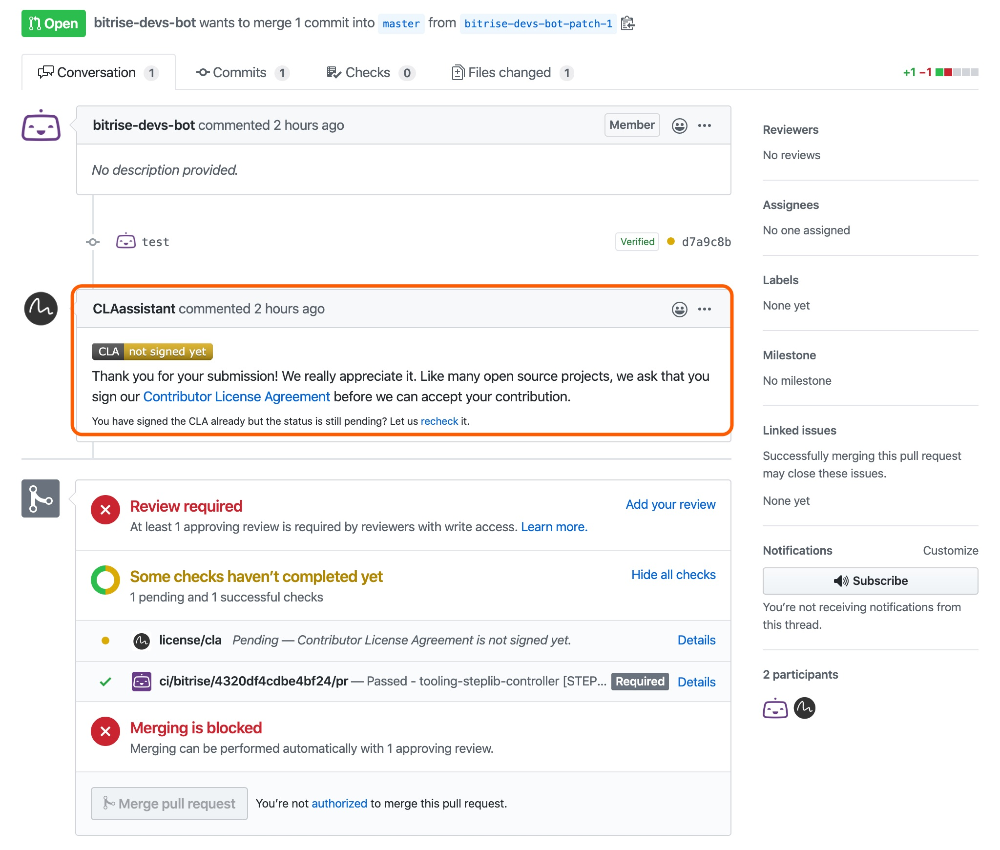
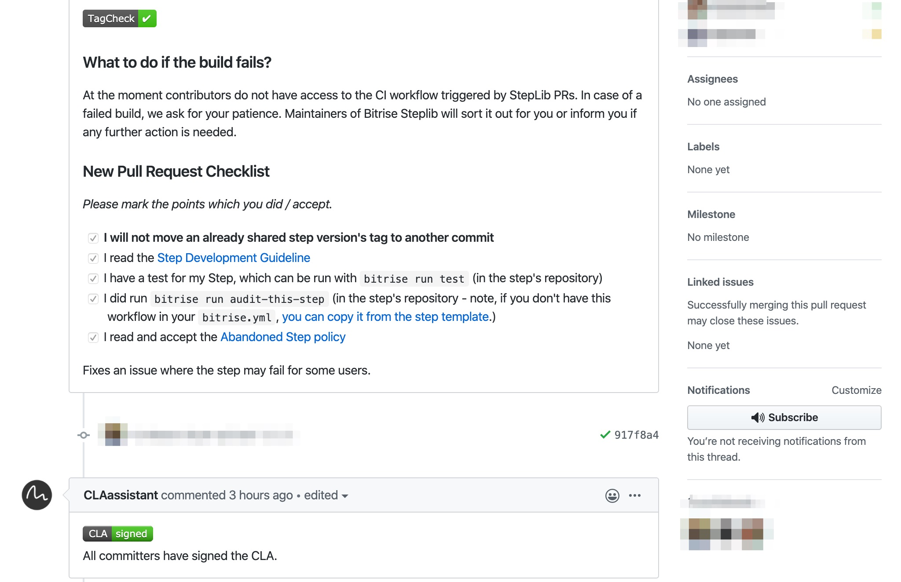

- Welcome to Bitrise documentation!
- Getting started
- Signing up for Bitrise
- Creating your first Workspace
- Adding a new app
- Webhooks and triggers
- Builds and Workflows
- Testing and deploying
- Migrating to Bitrise
- Signing up for Bitrise
- Creating your first Workspace
- Adding a new app
- Getting started with iOS apps
- Getting started with Android apps
- Getting started with React Native apps
- Getting started with Flutter apps
- Getting started with Ionic/Cordova apps
- Getting started with Expo apps
- Infrastructure
- Accounts
- Workspaces
- Apps
- Workflows and Pipelines
- Builds
- Code signing
- Testing
- iOS testing
- Android testing
- Flutter testing
- React Native testing
- Device testing with Firebase
- Test Reports
- Test Reports
- Exporting to Test Reports from any Step
- Running unit and UI tests for iOS apps
- Installing an .ipa file
- Registering test devices for iOS apps
- Device testing for iOS
- Running Android unit tests
- Device testing for Android
- Running tests in the Visual Studio App Center
- Running Detox tests on Bitrise
- Measuring your code coverage with Codecov
- Deploying
- Insights
- Bitrise CLI
- API
- References
- Getting started
- Bitrise Docs
Developing your own Bitrise Step
You can develop your own Bitrise Steps and your own project scanner, and submit them to Bitrise so that other users can use them, too.
Contributing to Bitrise is easy: develop an open source integration, submit it and you’re done! In this section, we’ll be focusing on technical contributions: creating a new Step and creating your very own project scanner.
Creating your own Step
Bitrise offers well over 200 Steps to our users. We maintain many of them ourselves but our users’ community does an outstanding job of contributing to our Step Library (StepLib). Anyone can submit a Step - if approved, it will become part of the official Bitrise StepLib and available to all Bitrise users! Check out how to create your own Step and share it with the world: Creating your own Step.
Creating your own scanner
Our project scanner automatically detects the project type whenever you add a new app on Bitrise. In this context, type means the platform or framework used to create the app, for example, Android, iOS, React Native or Flutter. Based on the results, we automatically create a configuration, with at least one default Workflow that contains the most frequently used Steps for the detected type.
Our scanner might not detect your app, for a couple of reasons: either something is missing from your repository (such as a config.xml file in the case of an Ionic app, for example), or we simply don’t have a scanner for your type yet. If it’s the latter, you can configure your app manually, or you can create your own scanner, with its own project configuration: Creating your own Bitrise project scanner.
Developing a new Step
To develop a Bitrise Step and get it integrated in our Step library, you need to write a code, create the description, and submit everything for review.
Duplicate Steps
Before deciding to develop a new Step, please make sure that there’s no already existing Step that performs the same function.
You can search for Steps on our Integrations page or in the Step Library on GitHub.
A Step is a build task: for example, the Git Clone Step clones your Git repository at the start of a build while the Google Play Deploy Step can deploy your finished app to the Play Store.
A Step contains the code that performs the build task. You can configure the inputs and parameters that define the task, and view and reuse the outputs a Step generates. Reusing the output means that another Step can use it as the value of one of its inputs.
Our Steps are written in Go or Bash. Steps are contained in their own Git repositories: that includes the code and the step.yml file that defines the configuration of the Step. If you wish to make the Step available to other users, the step.yml file needs to be included in the bitrise-steplib repository so that other users can find the Step on our website, in the Workflow Editor.
Sharing Steps
Sharing your custom Steps is optional: a Step with a use case that is specific to a single user will not be much help to others. As you can run a Step from your own machine or from any Git repository, your custom Steps do not have to be part of the Bitrise Step Library.
For more info on sharing Steps with other users, check out the Sharing Steps guide.
For detailed information on how Steps work, see the following guides:
Steps in YAML
Step inputs
Step outputs
Before you start developing a new Step
Before creating a new Step, you will need to install the Bitrise CLI, set it up, and make sure the Step plugin is updated to the latest version.
Install the Bitrise CLI.
Run bitrise setup.
Update the Step plugin to the latest version with the following command:
bitrise plugin update step
Creating the Step
We will use the Step plugin of the Bitrise CLI to create a new Step. With this, we’ll create the basic structure of the Step. Certain properties and inputs will be generated and assigned automatically. You can change anything later so don’t worry about it yet.
The Step plugin
Run bitrise :step in a command line interface to check its commands.
Creating the basic structure of the Step is simple. We’ll go over the concepts involved in the process in more detail later; for now, just go through the process to create the Step. At the end of this process, you will have a step.yml file, a README.md file and either a main.go or a step.sh file in the repository.
Before you start
During the Step creation process, you will be prompted to set a number of options. Note that you can change any of these before submitting your Step to Bitrise for review: the data will be included in the generated step.yml file that you can edit at your leisure later. During the initial Step creation process, you can use placeholders if you want to.
Open a command line interface, such as the Terminal app on MacOS.
Create a new directory for your Step if you haven’t done so yet and enter that directory:
Create the Step with the Bitrise Step plugin:
bitrise :step create.When prompted, set the name of the Step’s author.
Hit Enter to leave it on the default value.
When prompted, set the Step’s name.
The plugin automatically generates a Step ID based on this name.
Provide a summary: no more than a couple of sentences about what the Step does.
Provide a description of the Step.
This should contain configuration information and troubleshooting information for the Step.
Select the primary category of the Step.
To do so, type the number of the preferred option and hit Enter. This can be changed later.
Choose the toolkit you want to use: you can choose either Go or Bash.
Set up the source code hosting data for the Step:
To do so, first decide if you want to host it on GitHub or on any other site and enter the appropriate option:
If you chose GitHub, you will be asked to provide the username of the account that will own the repository.
If you chose not to store it on GitHub, you have to provide a valid URL for the repository.
You are done! If everything went well, the plugin initialized a git repository in the current directory and added a step.yml, a README.md file, and either a main.go or a main.sh file.
Now we’ll go through how the step.yml file works and how to set it up.
The step.yml file
The step.yml file is the Step interface definition, containing dependencies, Step inputs and Step outputs as well as other Step properties. It also points to the location of the Step’s source code. Every Step must have one.
If you use the Step plugin to create a new Step, all the required properties will have a value assigned - but you can change any of them at any time. So don’t worry if the title you set during the initial process does not conform to the guidelines below.
We’ll look at the most important configuration options of the step.yml file, including naming and describing your Step, as well as setting up Step inputs and Step outputs.
Naming and describing a Step
Every Step must have at least a title and a summary defined in the step.yml file. These will appear both on the Integrations page and in the Workflow Editor. The description property is optional but we strongly recommend providing one so that other users better understand how your Step works.
Description and summary
Both description and summary accept Markdown formatting in its values.
The title
The title property
The title property is required!
The title property sets the name of the Step, as it will appear on bitrise.io. It should be short and descriptive. Include the name of the service and the function it fulfils, such as Git Clone. Here’s a few guidelines for your Step titles:
Do not use the word ‘Step’.
Use imperative verbs instead of nouns when possible. For example, instead of Script Runner, it should be Run Script.
Do not include the name of the platform.
Make sure you use the correct name of a service or tool. For example, GitHub instead of Github.
Do not include implementation details.
The summary
The summary property
The summary property is required!
A single line of the most significant information about the Step. It can’t be longer than a 100 characters.
The summary is visible by default on the Workflow Editor. If a user expands the summary, the Step’s description will be presented - if there is one, of course.
The description
A detailed explanation of the Step. It should include:
What the Step does.
The services and tools used by the Step.
Configuration information, including the most important inputs.
Troubleshooting information: potential issues and their solutions.
By default, the Step’s description is collapsed on the Workflow Editor and the summary is presented.
Step categories
There is another thing we’d like to know about your Step: what type of Step is it? As you can see on our Integrations page or on the Workflow Editor, Steps are sorted into different categories based on two factors: the platforms for which they are available and their functionality.
Platforms
The available platform types are controlled by the project_type_tags attribute. If your Step is available for every platform or project type, do not specify project_type_tags. In any other case, select all platform types for which your Step is available.
The available values are:
iosmacosandroidreact-nativecordovaionicflutter
Category
Functional categories are controlled by the type_tags attribute in the step.yml. One Step should have only a single type tag assigned to it. Use utility only if you believe none of the other types fit your Step.
The available values are:
buildcode-signtestdeploynotificationaccess-controlartifact-infoinstallerdependencyutility
Step inputs
Step inputs are Bitrise Environment Variables: they consist of a key and value pair that users of the Step can set to control the Step behavior. For example, the Git Clone Step has an input with the key branch:
title: Git Clone Repository summary: Clone a repository to the specified path on the VM inputs: - branch: master
The value of this input - master in the above example - is used to determine which branch of the repository will be cloned.
Step inputs are visible on the Workflow Editor: they are presented in the order as they appear in the step.yml. As such, required and frequently used inputs should be at the top.
Step input keys and values
Use lower case snake case style input keys. For example, project_path.
Using opts as an input key
The input key can not be opts, as it is used for the input’s options.
There is no need to add domain-specific prefixes to the input keys, as inputs are only exposed for the Step run process. This means project_path input will not overlap with subsequent Steps’ project_path inputs.
Step input values are strings: the Bitrise CLI exposes the Step inputs as Environment Variables to the Steps.
Provide default values for Step inputs if possible (and if it makes sense). That makes the Step configuration easier for Bitrise users.
Environment Variables must not be used as default values, unless:
They are exposed by the Bitrise CLI or by bitrise.io.
They are generated as an output by another Step (for example,
$BITRISE_IPA_PATH,$BITRISE_AAB_PATH).
This is because the Workflow Editor highlights required inputs without values to express the Step will not work without setting a valid value for the given input. If you set an Env Var, which does not have an automatically assigned value, as the default value for an input, the Workflow Editor will think the required input in question has a valid value set (even if the default Env Var has no value yet).
Also, there is no reason to suggest a certain name for an Environment Variable this way: users might have the same value assigned to an Env Var with a different name.
Let’s talk about how Step inputs are passed to code and how they are presented.
Configuring Step inputs
Step inputs are defined and configured in the step.yml file.
In addition to a key and a value, Step inputs are required to have an opts property. This property contains the different options that define how the inputs are passed to the code of the Step and how it is presented in the Workflow Editor. The possible values of the input can be set in opts as well. Let’s see an example.
- install_defaults: "yes"
opts:
title: Installs default Codesign Files
value_options:
- "no"
- "yes"The above input has the key install_defaults, and its default value is yes.
The value_options option defines the possible values: in this case, yes and no. Its opts property contains some information about how the input is presented: in this case, it’s just a title option, which is always required. The title is displayed in the Workflow Editor instead of the key of the input.
The value_options input
The value_options input must contain a string. This means that without the quotation marks, as indicated in the example, the validation will fail.
Naming and describing Step inputs
A Step input can have a name, a summary, and a description, just like the Step itself. To define these:
Include an
optsproperty with the Step input.Under opts, provide a title, a summary, and a description option.
Let’s take a look at how these should look like!
Description and summary
Both description and summary accept Markdown formatting in its values.
title: It should be a short and descriptive sentence or half sentence: The Xcode project’s path. It should not be a CLI flag or API parameter name used internally. This makes Step configuration easier, as no preexisting knowledge will be required about the underlying tool or service interfaces. It’s also easier to change the Step’s implementation while maintaining backwards compatibility.summary: It is the short version of the description, which provides a quick overview of the input. On the Bitrise Workflow Editor, the summary of the inputs is presented by default when you click on a Step.description: It is the user facing description of the Step input: this should provide a deeper, more detailed explanation of the input. By default, it is not visible in the Workflow Editor, unless the user clicks on the input in question.
Here is an example:
- install_defaults: "yes"
opts:
description: Installs default (Bitrise) Wildcard Provisioning Profile and
Certificate files for testing.
summary: Installs default (Bitrise) Wildcard code signing files.
title: Installs default code signing filesNow, let’s talk about some other configuration options for Steps.
Required inputs
Required inputs must have a valid value, otherwise the Step will fail.
To mark a Step input as required, use the is_required option of the opts property. It has two values: true and false. If set to true, the input will be displayed as REQUIRED on the Workflow Editor.
- keychain_password: $BITRISE_KEYCHAIN_PASSWORD
opts:
title: "Keychain's password"
is_required: trueSensitive inputs
You can mark Step inputs as sensitive to make sure their values do not get exposed. Sensitive inputs only accept Secrets as values. This ensures they are not visible in build logs.
To mark a Step input as sensitive, use the is_sensitive option of the opts property. It has two values: true and false. If set to true, the input will be displayed as SENSITIVE on the Workflow Editor.
The is_expand option
If you mark an input as sensitive, the is_expand option of the input also must be true, which is the default setting.
inputs:
- certificate_urls: $BITRISE_CERTIFICATE_URL
opts:
title: "Certificate URL"
is_sensitive: trueUsing Env Vars as input values
As noted earlier, it is possible to use Environment Variables as the value of any given input. By default, the Step will expand the Env Var and pass its value to the Step execution. This is defined by the is_expand option of the opts property.
- project_path: $BITRISE_PROJECT_PATH
opts:
is_expand: trueThe is_expand option can have two values: true or false. If set to true - this is the default behavior -, the value of $BITRISE_PROJECT_PATH will be passed to Step execution. If set to false, the string $BITRISE_PROJECT_PATH will be passed (and this particular Step will fail as it will not find the project location).
Env Vars in Step code
Do not use Environment Variables directly in your Step’s code. Instead, expose every outside variable as an input of your Step and set the default value of that input to the Environment Variable you want to use. This way it’s easier to test the Step and the user of the Step can easily declare these inputs, without having to scour through code for the required variable.
Grouping inputs together
The category option is used to group inputs together. Inputs belonging to the same category are displayed together and collapsed by default in the Workflow Editor.
- default_certificate_passphrase: $BITRISE_DEFAULT_CERTIFICATE_PASSPHRASE
opts:
category: Default code signing files
description: |
Certificate passphrase of the default certificate.
is_sensitive: true
title: Default certificate passphraseIn this case, this input will appear with all the other inputs that have the same category set.
Categories may be used if the Step has more than six inputs. The suggested maximum number of inputs in a group or in the root is six.
Please keep in mind, when designing Step categories, that:
Required inputs should not be grouped!
Grouped inputs should be displayed after non-categorised inputs.
Accepting a list of values for inputs
It is absolutely possible to accept a list of values for a given input. If you wish to do so, we strongly recommend adding a list suffix to the key of the input (for example, input_path_list), and expect the values to be provided as a newline character (\n) separated list (for example, first value\nsecond value).
Please use this solution unless you really need to use another character for separating values. Based on our experience, the newline character (\n) works really well as a universal separator character, as it’s quite rare in input values (compared to ,, ;, = or other more common separator characters).
As a best practice, you should filter out empty items. Use either:
first value\n\nsecond value
or
first value\n \nsecond value
Step outputs
Steps can generate outputs which can then be used in other Steps as inputs. That means that if a Step generates an artifact, the path to that artifact can be the input of another Step in the build. For example, the Xcode Archive & Export for iOS Step exposes the $BITRISE_API_PATH output which can then be used as an input value for the Deploy to iTunesConnect Step.
Outputs are also defined in the step.yml file, under the outputs property. They have the same structure as inputs: they consist of a key and value pair. An output’s key can be used as an input value in a subsequent Step, just as Environment Variables exposed by bitrise.io or the Bitrise CLI can be.
Step output keys and values
For output keys, use upper case snake case style output keys, for example: OUTPUT_PATH.
Naming and describing Step outputs
Step outputs are always exported as Environment Variables (Env Var). For example, the Xcode Archive & Export for iOS Step generates an IPA file: this output is exported as the BITRISE_IPA_PATH Env Var:
outputs:
- BITRISE_IPA_PATH:
opts:
title: .ipa file path
summary: Local path of the created .ipa fileAs the example shows, the output definition contains a key (BITRISE_IPA_PATH) and under the opts property, it also includes a title and a summary. In the Workflow Editor, the key and the title are visible by default: these are required. In addition, you can add a summary and a description:
title: It should be a short and descriptive sentence or half sentence: Generated IPA path. This is required.summary: It is the short version of the description, which provides a quick overview of the output. This is optional, and only visible in the Workflow Editor if you click on the title.description: It is the user facing description of the Step output: this should provide a deeper, more detailed explanation of the output. This is optional, and only visible in the Workflow Editor if you click on the title.
Outputs with list of values
It is absolutely possible to provide a list of values for a given output. If you wish to do so, we strongly recommend adding a LIST suffix to the key of the output (for example, BITRISE_APK_PATH_LIST), and expect the values to be provided as a newline character (\n) separated list (for example, first value\nsecond value).
Please use this solution unless you really need to use another character for separating values. Based on our experience, the newline character (\n) works really well as a universal separator character, as it’s quite rare in input values (compared to ,, ;, = or other more common separator characters).
Setting conditions for running the Step
There are three properties that define whether a Step is run in a given Workflow or not: is_always_run, is_skippable and run_if. All of these properties can be set in the step.yml file to govern the default behavior of the Step, or set in a given app’s bitrise.yml file on a case-by-case basis.
is_always_run: By default, Steps do not run if a previous Step in the Workflow failed. However, if the is_always_run property is set to true, the Step runs regardless of the status of previous Steps in the Workflow. This can be very useful, for example, in the case of Steps that can send notifications about the build: they can send notifications about failed builds.
is_skippable: As mentioned above, Steps do not run if a previous Step in the Workflow failed. However, if a Step’s is_skippable property is set to true, the build will not fail and subsequent Steps will run even if that particular Step fails. A good example is the Cache:Pull Step: if an app has no build cache to pull from, the Step will fail but that is no reason to fail the build.
run_if: If you want to make Step execution dependent on a certain condition, use the run_if property to define the run condition. For example, you can configure a Step so that it only runs in a CI environment. Read more in our Enabling or disabling a Step conditionally guide about the possible use cases.
Submodules and Step dependencies
Do not use submodules, or require any other resource downloaded on-demand in your Step! Try to include everything required for your Step in the Step’s repository. Otherwise you can run into problems if, say, the Step fails to download a resource because of a network error or some authorization problem. In the case of submodules, you should include the content of the other repository instead of using it as a submodule of your Step’s repository.
You can, however, declare dependencies that you can fetch from an OS dependency manager, such as apt-get or brew. A Step dependency is installed by the Bitrise CLI if it is not available in the PATH Environment Variable.
As Steps can be run in any environment where the Bitrise CLI can run, list every used dependency, even if you know that they are pre-installed on the Bitrise stacks. Unused dependencies (for example, git and wget added as a sample by default) waste build time.
Step dependencies should not include toolkit dependencies, as the Bitrise CLI will take care of installing those automatically. A Step written in golang should not list go as a dependency if the Step uses the Go Bitrise CLI toolkit.
The Bitrise CLI can install Step dependencies available in the Homebrew package manager:
deps: brew: - name: cmake
It can install apt-get dependencies available in the sources listed in the sources.list file on the host machine:
deps: apt_get: - name: cmake
Accessing files in the Step repo with an Env Var
If you need to keep a binary, assets or anything else required for your Step that should be bundled in the Step repository, then you can include them beside your step.yml file and the code of your Step. The Bitrise CLI automatically exports an Environment Variable called BITRISE_STEP_SOURCE_DIR that allows you to access these files at any time.
For example, you can access a .jar file in the root of your Step’s repository like this:
$BITRISE_STEP_SOURCE_DIR/mytool.jar
Adding a Step icon
You can add a Step icon to your Step: you will see it in the Workflow Editor and on our Integrations page. If you want to, there are some requirements:
Its background color should not be transparent.
Size: 256x256 px.
Margin: 60 px.
Format: SVG.
Verified Steps
Please note that if you wish to submit a Step for verification so that it becomes a Verified Step, you must add a Step icon.
To submit your Step’s icon:
Add the .svg file into your StepLib fork repo at:
STEPLIB_FORK_ROOT/steps/YOUR_STEP_ID/assets/icon.svg.Create a new pull request to the StepLib repository.
Sharing Steps with all Bitrise users
If you think your Bitrise Step can be of use to others, you can share it via a CLI command or a Bitrise Workflow. Shared Steps must be actively maintained and they must be open to contributors.
If you think your Step can be of use to others, you can share it! Before doing so, however, please check that there are no other Steps that solve the same problem. You can check:
In the list of released Steps.
In the list of open pull requests in our StepLib.
In the list of closed pull requests in our StepLib.
If you find a Step which is missing a particular feature, please try to contribute to it before developing or sharing a brand new Step for that feature. You can use our Integrations page to search for Steps in the Bitrise StepLib. By clicking the GitHub source button on a given Step’s page you will be taken to the Step’s repository, where you can submit a feature request or open a pull request.
Also, please keep in mind that shared Steps must be actively maintained and they must be open to contributors.
Sharing a new Step
The sharing process is relatively straightforward - but please make sure to go through the process carefully when sharing a new Step.
The bitrise share command
During Step development, you can get help anytime by simply running bitrise share. This will print a short guide on sharing.
There are two ways to share a Step:
You can do it manually, using the
bitrise sharecommand.If you created the Step with the Step plugin, you can run the
share-this-stepWorkflow in your Step’s directory.
Before you start
Before you start, make sure that:
Your Step is in a public Git repository.
The step.yml file contains a support_url property which points to a valid issue tracker (for example, the Issues page of your Step’s GitHub repository).
The step.yml file contains a source_code_url property which points to the correct Git URL of your repository.
Sharing more than one Step
Sharing more than one Step - that is, adding more than one new step.yml file to the Bitrise StepLib - must be done in separate pull requests! You cannot open a pull request that contains more than one new Step!
If you’re ready, go ahead with your preferred sharing process!
Sharing with the bitrise share command
Fork the Bitrise StepLib repository.
Prepare your forked StepLib locally for sharing:
$ bitrise share start -c <https://github.com/[your-username]/bitrise-steplib.git>
Add the Step version tag to your Step’s repository.
Add the Step to your forked StepLib repository:
$ bitrise share create --tag [step-version-tag] --git [step-git-uri].git --stepid [step-id]
Optionally, perform a complete health check on your forked StepLib:
$ bitrise share audit -c <https://github.com/[your-username]/bitrise-steplib.git>
Review your Step’s step.yml file, and if you’re happy with it, finish the share process: This commits and pushes the step.yml file to the forked StepLib repository.
$ bitrise share finish
This commits and pushes the step.yml file to the forked StepLib repository.
Open a pull request in the official Bitrise StepLib repository.
Sharing with the share-this-step Workflow
The share-this-step Workflow is included in the bitrise.yml file that the Step plugin automatically generates when you create a new Step with it. Using it, sharing a Step is incredibly easy:
Fork the Bitrise StepLib repository.
Set the required Workflow Environment Variables as app level Environment Variables in the bitrise.yml file:
app: envs: - BITRISE_STEP_ID: - BITRISE_STEP_VERSION: - BITRISE_STEP_GIT_CLONE_URL: - MY_STEPLIB_REPO_FORK_GIT_URL:
Run the share-this-step Workflow in the Bitrise CLI:
$ bitrise run share-this-step
Fixing issues in a StepLib pull request
Once you submitted your Step version to the StepLib, wait for the Bitrise team to review it. If we ask for changes:
Close the pull request.
Delete the share branch from your fork of the Bitrise StepLib.
Fix the issues in the Step repository.
Add a new version tag to the commit that contains your fixes in the Step repository.
Run the share process again.
Hopefully, after fixing the issues, we’ll be able to merge your pull request and release your Step to the public!
Abandoned Steps
If you are a Step maintainer, you should be reachable within a reasonable timeframe if anyone submits an issue or a pull request to your Step. If we try to contact you several times regarding an important fix/update in your Step and you refuse to answer for several weeks we might deprecate, remove or replace your Step in the collection! Abandoned Steps can be a threat for those who use it, please keep this in mind if you decide to share your Step with others!
The repository and issue tracker must not be removed, as there are permanent links to it included in the step.yml that is in the Bitrise StepLib. If they are removed, already shared Step versions will continue to function as they are also shared on a Bitrise managed file hosting service during the share process. A new version of the step may be released, managed by Bitrise.
If you shared a Step but you’re no longer able or willing to maintain it, please create a GitHub issue in this repository: Bitrise StepLib
Reporting Step issues
If you’re a user of a Step which has critical (security or functionality) issues, please create a ticket in the Step’s Issue Tracker. Every Step declares the preferred way of reporting issues with the support_url attribute.
If you don’t get a response from the Step’s maintainer for an extended period (for more than a couple of weeks) please create a GitHub issue in this repository: https://github.com/bitrise-io/bitrise-steplib and we’ll try to resolve the issue, following the Abandoned Step policy. Please be patient and keep in mind that everyone who contributes to this collection does so to help you by providing a Step for you to use!
Verified Steps
Verified Steps are Bitrise Steps whose owner guarantees secure, maintained, consistent, and high-quality performance for any Bitrise user. To have your Step verified, you must apply for the Verified badge.
What are Verified Steps?
A Step contains the code that performs a specific build task. Bitrise has over 300 Steps in its Step Library (StepLib) which third party companies or open source teams can enrich with Steps based on their services/tools. This means they have full power to roll out updates to the Step while Bitrise maintains an overlaying control to ensure service quality and security.
A Verified Step means that the owner of a service or tool or an open source team guarantees secure, maintained, consistent, and high-quality performance for any Bitrise user. Our official Bitrise Steps are maintained by us, whereas our Community Steps are maintained by the community. It’s easy to decide which type a Step falls into on our GUI.
Verified Steps are labeled with a blue badge in Bitrise.
Official Bitrise Steps are labeled with a green badge.
Community created Steps do not have any badge.
In this guide we explain how to get your Step verified by Bitrise.
Requirements
For company owned services and tools: Your company must be the owner of the service or tool used by the Step to apply for the Verified badge.
For open-source services or tools: If you are a member of an open source or other informal team, please confirm with the rest of the team that you may sign this for yourself and that it applies to the Steps you are submitting for the team.
Your Step must comply with our Service Level Agreement .
Your Step must have its own Step icon.
You must include a Workflow Recipe to a Step to become a Verified Step.
We strongly recommend that you consult with our Step development guidelines before creating a Step.
What is a Workflow Recipe?
A Workflow Recipe is a template that anyone submitting a Step to Bitrise must put together when applying for the Verified Step badge. You can develop a Step and decide not to include a Workflow Recipe, but to turn your Step into a Verified one, you have to submit a Workflow Recipe as well.
Workflow Recipes are published on Bitrise where our Bitrise community can learn how the Verified Step can be used in a specific setup.
Should you have questions, please turn to our partnership team at partners@bitrise.io.
Promoting your Verified Step
As part of the Verified Step Program, you must commit to taking part in one or more than one of the following co-marketing activities:
In-app messaging.
Dedicated co-branded email campaign, or newsletter mention.
Blog post content.
How-to article, documentation, or help center page.
Social media activities.
Webinars or virtual events.
Podcasts.
Events (panels, fireside chats, video testimonials, or sponsorship).
Case study/whitepaper/ebook/ (shared research, testimonials, co-writing a chapter, publishing on each others’ blogs).
Video content posted on our public YouTube channel.
Joint PR campaigns.
These co-marketing opportunities enable you to increase your product’s content generation output, grow go-to-market plans, and help to drive integration adoption.
You can consult with your Bitrise Partner Manager (partners@bitrise.io) to confirm which co-marketing activities you can do, clarifying what level of involvement you will want to do based on your marketing plans. There can be many interested in a single co-marketing event so your involvement is managed on a first-come, first-serve basis.
Applying for a Verified badge
Create the Step based on our Step development guideline. The Step’s repository MUST be on GitHub.
Share your Step in our bitrise-steplib and fill out the New Pull Request Checklist.
When the CLAassistant prompts you, sign our Contributor License Agreement. Until this is not completed, merging is blocked on the PR.
Please fill out our Partnership Form!
Once you submitted the form, our Partner Management Team will contact you within 5 business days to discuss the rest of the process.
If at any stage of the process you wonder what happens with a Step candidate that is already covered by another Step in our StepLib, head over to How do we go about Step duplication?
Service level agreement for Verified Step authors
Anyone can contribute to a Verified Step which is already part of our StepLib by creating an issue or a pull request (PR). The Verified Step author has to manage the contribution (for example, issue, PR, or any maintenance such as third-party system changes) from start to finish. Bitrise monitors open issues and PRs created for Verified Steps and contacts the Verified Step authors if those contributions are not handled. If the Verified Step author fails to manage the contribution as described in our Contributor License Agreement and this SLA, Bitrise withdraws the Verified badge from the Step. This is to ensure Verified Steps in our StepLib are always of high quality and meet Bitrise users’ expectations.
Managing contributions
The following guidelines aim to help Verified Step authors categorize contributions. The Verified Step author is responsible for any contribution made to the Verified Step. The Verified Step author acknowledges the contribution by adding a label an estimated time to perform the fix, and merge the PR. There are four labels the author can use to categorize the type of contribution:
critical-buglabel means that the current feature set has abnormal behavior, which blocks users from using the Step and there is no workaround to fix the issue. This critical bug must be fixed by the author.buglabel means that the current feature set has abnormal behavior, which does not block users from using the Step and there is a workaround for the issue. This bug must be fixed by the author.feature-requestlabel means that a new feature or Step is being requested. The Verified Step author can decide if the feature is worth implementing.maintenancelabel means improving the Step’s source code in a way that it does not add new features or potential bugs to the Step. The Verified Step author can decide whether the feature is worth implementing or not.rejectedlabel means the contribution which gets rejected by the Verified Step author must be closed within the first response time, that is 5 business days. When rejecting a contribution, the Verified Step author has to provide an explanation to the contributor within the first response time.acceptedcontribution means that the given: critical-bug, bug, feature, maintenance will be fixed/merged within the given resolution time.
First response time means that there is a 5 day window during which the Verified Step author should respond to the contribution with the accepted or rejected labels.
Resolution time means a certain amount of business days during which the contribution (issue or PR) should be completed by the Verified Step author.
Type | First response time | Resolution time |
|---|---|---|
critical-bug | 5 business days | 10 business days |
bug | 5 business days | 15 business days |
feature-request | 5 business days | 20 business days |
maintenance | 5 business days | 20 business days |
How do we go about Step duplications?
In general we try to keep our StepLib streamlined and avoid Step duplications for the same build task. Here you can find some questions and answers when it comes to any potential Step duplications.
I was going to submit a Step and apply for the Verified badge, but found out there was an official Bitrise Step for the same build task in the StepLib. What should I do?
Submit your Step and go through the application process. Once your application is completed, we deprecate the official Bitrise Step and our users can use your new Verified Step.
I was going to submit a Step and apply for the Verified badge, but found out there was a Community Step for the same build task. What should I do?
Submit your Step and go through the application process. Your new Verified Step and the Community Step will be both available in our StepLib.
I was going to submit a Community Step but found out there was a Verified Step for the same build task. What should I do?
If a Verified Step is already available in our StepLib, we reject Community Step submission for the same build task to avoid Step duplication. We offer to the Community Step developer to work on future updates of the already existing Verified Step.
Creating your own Bitrise project scanner
A Bitrise project scanner must have a scan result model. Every platform scanner writes its possible options, configurations, and warnings into this model. These will be translated into Step input values by choosing the desired values for the given options.
The project scanner is a tool that identifies the given project’s type and generates a basic Bitrise configuration. Each supported project type has its own scanner: these scanners are stored as separate packages.
A project type scanner defines at least two Workflows: one for testing (primary) and one for building (deploy). It includes the minimal amount of Steps to successfully run them.
Build and test Steps
Build Steps and test Steps have specific requirements:
A build Step must build your app so that it is ready for deployment and it must output an Environment Variable that points to the output file(s). For example, a build Step to build an iOS app must output an .ipa file (not, say,
.xcodearchive) and the path to this .ipa file.A test Step must output the test results so that they are available for viewing on the build page on bitrise.io.
When adding a new project on the website or initializing a project on your own machine, the bitrise-init tool iterates through every scanner, calls the scanner interface methods on each of them and collects their outputs. Based on these outputs, a basic configuration is generated.
The possible Workflows are described in a scan result model. The model consists of:
options
configs
warnings
Here is the basic structure of the model, in YAML:
options:
DETECTED_PLATFORM_1: OptionModel
DETECTED_PLATFORM_2: OptionModel
...
configs:
DETECTED_PLATFORM_1:
CONFIG_NAME_1: ConfigModel
CONFIG_NAME_2: ConfigModel
...
DETECTED_PLATFORM_2:
CONFIG_NAME_1: ConfigModel
CONFIG_NAME_2: ConfigModel
...
...
warnings:
DETECTED_PLATFORM_1:
- "warning message 1"
- "warning message 2"
...
DETECTED_PLATFORM_2:
- "warning message 1"
- "warning message 2"
...Every platform scanner writes its possible options, configurations and warnings into this model. These will be translated into Step input values by choosing the desired values for the given options.
Every option chain’s last option selects a configuration.
Warnings display the issues with the given project setup.
Options
Options represents a question and the possible answers to the question. For example:
Question: What is the path to the iOS project files?
Possible answers: List of possible paths to check
These questions and answers are translated into Step inputs. The scanner should either determine the input value or let the user select or type the value.
For example, the Xcode Archive & Export for iOS Step has an input called export-method. This informs the Step of the type of .ipa you want to export. The value cannot be determined based on the source code so the scanner collects every possible value and presents them to the user in the form of a list to choose from.
Selecting an option can start a chain: it can lead to different options being presented afterwards. For example, if you select an Xcode scheme that has associated test targets, it leads to different “questions”. Similarly, selecting a certain option can lead to a different workflow being generated afterwards.
The option model
The OptionModel represents an input option. It looks like this in Go:
// OptionModel ...
type OptionModel struct {
Title string
EnvKey string
ChildOptionMap map[string]*OptionModel
Config string
}Title: the human readable name of the input.EnvKey: it represents the input’s key in the step model.ChildOptionMap: the map of the subsequent options if the user chooses a given value for the option.
For example, let’s see a scenario where you choose a value for the Scheme input. You will have a value_map in the options. The possible values are:
SchemeWithTestSchemeWithoutTest
By choosing SchemeWithTest, the next option will be related to the simulator used to perform the test.
By choosing SchemeWithoutTest, the next option will be about the export method for the .ipa file.
{
"title": "Scheme",
"env_key": "scheme",
"value_map": {
"SchemeWithTest": {
"title": "Simulator name",
"env_key": "simulator_name",
...
},
"SchemeWithoutTest": {
"title": "Export method",
"env_key": "export_method",
...
}
}
}Every option chain has a first option: this is called head. The possible values of the options can branch the option chain.
Every option branch’s last options must have a config property set. config holds the id of the generated Bitrise configuration.
An options chain’s last options cannot have a value_map.
{
"title": "Scheme",
"env_key": "scheme",
"value_map": {
"SchemeWithTest": {
"title": "Simulator name",
"env_key": "simulator_name",
"value_map": {
"-": {
"config": "bitrise_config_with_test",
}
}
},
"SchemeWithoutTest": {
"title": "Export method",
"env_key": "export_method",
"value_map": {
"development": {
"config": "bitrise_config_without_test",
},
"app-store": {
"config": "bitrise_config_without_test",
},
"ad-hoc": {
"config": "bitrise_config_without_test",
}
}
}
}
}
Scanners
Scanners generate the possible options chains and the possible workflows for the options per project type. The ActiveScanner variable holds each scanner implementation. Every specific scanner implements the ScannerInterface.
// ScannerInterface ...
type ScannerInterface interface {
Name() string
DetectPlatform(string) (bool, error)
Options() (models.OptionModel, models.Warnings, error)
Configs() (models.BitriseConfigMap, error)
DefaultOptions() models.OptionModel
DefaultConfigs() (models.BitriseConfigMap, error)
ExcludedScannerNames() []string
}Name() string: This method is used for logging and storing the scanner output (warnings, options and configs). The scanner output is stored inmap[SCANNER_NAME]OUTPUT. For example, theoptionsfor an iOS project is stored inoptionsMap[ios]options.DetectPlatform(string) (bool, error): This method is used to determine if the given search directory contains the project type or not.Options() (models.OptionModel, models.Warnings, error): This method is used to generate option branches for the project. Each branch should define a complete and valid option set to build the final bitrise config model. Every option branch’s lastOptionshas to store a configuration id, which will be filled with the selected options.Configs() (models.BitriseConfigMap, error): This method is used to generate the possible configs. BitriseConfigMap’s each element is a bitrise config template which will be fulfilled with the user selected option values.DefaultOptions() models.OptionModel and DefaultConfigs() (models.BitriseConfigMap, error): These methods are used to generate the options and configs without scanning the given project. In this case every required step input value is provided by the user. This way even if a scanner fails, the user has an option to get started.
Testing a scanner
To test a scanner, we require both unit tests and integration tests.
Unit tests are written using Go’s standard testing library.
For integration tests, we are validating that the project type scanners are generating the desired Bitrise configurations for an instance of the project type. To do this, we use the new scanner to scan the given sample project and we modify the generated scan result to fit our integration tests.
The reason for the modification is that the scanners are adding Steps to the generated config, but the Step versions are updated from time to time. The Step version definitions can be found at steps/const.go.
So we call bitrise-init --ci config in the sample project’s root directory, and in the generated scan_result.yml file we replace the Step versions with %s and we use fmt.Sprintf to inject the latest defined Step versions into the config.
In the integration tests, we are matching the scan_result.yml file generated by the scanner with the previously generated reference scan_result content.
Submitting your own scanner
You can submit your own scanner to Bitrise: we will review it and integrate it to the bitrise-init tool once it’s approved!
The development path for a new scanner starts with your own sample project and ends with updating the existing Steps for your project type. Let’s go through it!
Find or create an open source sample app that demonstrates a typical instance of your project type.
It should include:
a readme file (including tool versions required for updating, building and testing this project).
a
bitrise.ymlfile that is generated by your scanner.
Build and test your sample app with existing Steps or custom scripts.
Create the missing Steps the new project type needs.
The PR for these Steps should link the scanner PR once you created the scanner.
Create a scanner for your project type.
Run the required unit tests and integration tests.
Open a scanner pull request to the bitrise-init project.
It should:
link the new project type’s sample app.
link the new project type’s guides for testing and building.
include an icon for the new project type - otherwise we will create one for you.
recommend the default stack by listing the required tools for building and testing the new project type.
Update the existing Steps with the new project type if necessary.
The PR for these Steps should link the scanner PR.